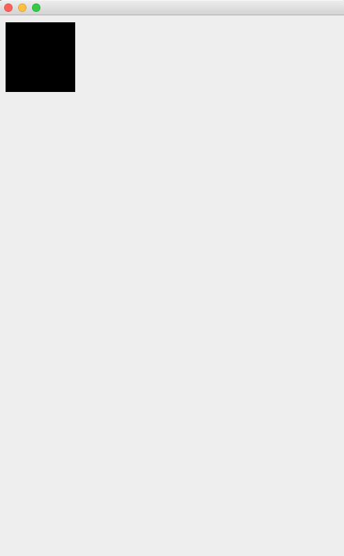

Drawing Shapes
paintComponent()
1. Create a new class called GamePanel. This class will draw the game in the game's window (JFrame).
2. Add extends JPanel to the end of your class declaration (see below). This makes GamePanel a subclass of JPanel and allows it to inherit its properties. By creating our own class, we can customize the panel's code to better suit our game.
public class GamePanel extends JPanel{ ... }
3. The GamePanel class needs to override the JPanel's paintComponent() method. To do this, copy the method below exactly as written and put it into the GamePanel class.
@Override
public void paintComponent(Graphics g){
} Make sure the java.awt.Graphics class has been imported into GamePanel.
4. We will use the paintComponent parameter, a Graphics object called g, to draw our game on the GamePanel. First draw a rectangle using the following code:
g.fillRect(10, 10, 100, 100);
The parameters for the rectangle are the exact same as Processing: (x, y, width, height). So this code will draw a square that is located at (x,y) = (10,10) and whose sides are 100 pixels long.
LeagueInvaders
5. Add a member variable for a GamePanel object. Initialize it in the LeagueInvaders constructor. At the beginning of the setup() method, add the GamePanel to your JFrame.

TESTING
6. Run the program. Do you see a square appear in your window? If not, get this part working before you move on to the next step.